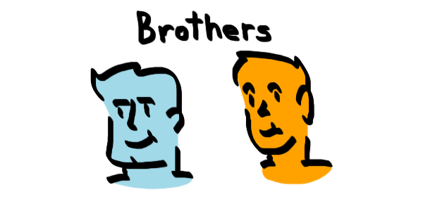
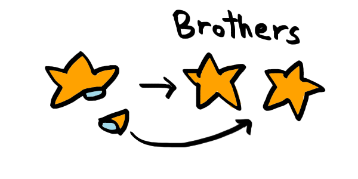
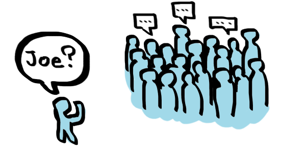
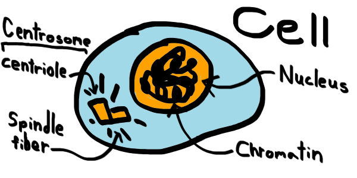

What is Meiosis?
Meiosis is the process we use to create variation in children during reproduction. It is thanks to this process that people look so different! No one looks the same, and it is amazing to learn about how clever our body is to be able to come up with this special set of steps.
 Two siblings can look very different from one another!Who does it Affect?
This process of meiosis is special, and as it turns out, not every single creature can go through it. There are many starfish who have no variation from their children. In fact, they clone themselves by popping one of their arms off! That arm will later grow back up into the entire animal as an entire complete copy.
 Starfish of the same specises look exactly the same.But to be specific, meiosis does not actually happen on a large-scale level like the process a starfish might got through. Meiosis actually happens in our cells, the smallest living units of our body.
There are two main types of cells in our body: somatic cells and gametocytes. Somatic cells are regular cells in your body, like those on your skin. Gametocytes are the special kind, so they are the ones that go through meiosis for reproduction.
WERE YOU PAYING ATTENTION
What kind of cells make up your brain?
Why do we need it?
Meiosis is important for people, but it can't be that important if some animals don't have it right? Why can't we all just look the exact same! While that idea might be a strange one to us right now since we all look different, there are many animals who don't mind looking the exact same as one another. I mean it makes it easier to tell who is friends and who is foe, right?
 Trying to communicate when everyone's the same.We already said meiosis was important because it makes us look different, but it also is used to make us different on the inside as well. If we were all the same, there could be one disease that will wipe out everyone. But because meiosis allows variety, there will be some people who can combat it.
We need meiosis because we need to evolve, plus it might be kind of hard for you to distinguish between with your friends if we did all look alike.
Important Cell Structures
In the next couple of sections you will learn not only the steps of meiosis, but also the ways that it actually allows us to be so different. But before we can get too deep, there are a couple of structures you need to be familiar with inside your gametocytes.
 The structures important for meiosis are the centrosome, the nucleus, and the chromatin.The nucleus is a package that contains all the DNA that makes you an individual. This DNA is packed down tightly into chromatin.
The centrosome holds centrioles that manuever the spindle fibers, thin structures important for movement of DNA during meiosis.
These structures are in all cells, but in gametocytes they work together to perform meiosis.
WERE YOU PAYING ATTENTION
What is the importance of meiosis?
BRIDGING QUESTION
What is DNA responsible for?